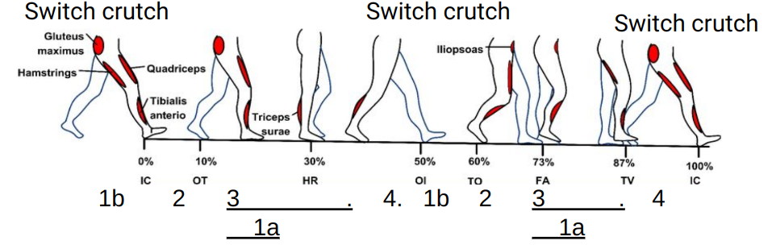

QUIX
Haptics

QUIX overview
This project is a haptic feedback system that integrates into the IHMC's rehabilitative QUIX Exoskeleton. The QUIX Exo is a rehabilitative exosuit developed by the IHMC to enable persons with paraplegia to walk through the assistance of powered exoskeleton legs. Mark Daniel is the official pilot of the QUIX Exosuit. Mark has paraplegia from a car accident in early adulthood that injured his spine. He has helped test and develop exoskeletons at the IHMC for over a decade and has continued to inspire myself and others to push the limits of human ability and exo technology. Using the QUIX Exo, Mark competed and placed 4th on the world stage at Cybathlon 2020.
Goals
The haptic system relays important information in an intuitive and easily perceptible manner with vibration motors mounted on the user's arms. The haptic system is designed to help percieve the movements of the legs throughout the gait cycle. Additionally, the haptic system enables center of pressure feedback, enabling better balance perception and correction while standing. The primary goal for the haptic feedback is to restore to the pilot awareness of their legs, where they are, what they are doing etc. This haptic awareness would decrease compensatory behaviors normally present in non-haptic enabled exosuits. Compensatory behaviors such as looking down at your legs while walking and or rhythmically timing the heel-strike impacts while walking can be eliminated with this haptic awareness. A good milestone for the effectiveness of the haptic system would be for Mark or any other exo pilot to walk in the exosuit comfortably with their eyes closed.


Walking overview
Due to the currently limited nature of QUIX's sensing and processing, the amount of available information to perceive is limited. The vibration sleeves are primarily designed to help Mark (or any exo pilot) perceive the state/position of the legs during a pre-programmed gait cycle. To utilize the cyclical nature and the distinct states of a walking gait cycle, the haptic motors are divided among landmarks of the gait, specifically the toe-off, swing, and heel-strike.
After discussion and feedback from Mark, having distinct perception/indication of the specified gait landmarks is significant for improving the conjunction of perception and reaction. The landmarks were specifically selected because they are high activity events. Toe-off and heel-strike have high impact on the inertia and movement of the EXO, therefore requiring much more preparation and reaction from the pilot to maintain control and balance of the EXO. Using the haptic feedback to perceive and anticipate these landmarks would greatly increase the pilot's ability to adapt and control walking stability without requiring visual confirmation of what their legs are doing.
Per request of Mark, the leg swing action is paired with a motor pattern that is designed to help time and anticipate Heel-strike. This is done with a ramping oscillation pattern of the arm motors that, with little training, would help couple the haptic perception with the swing and strike of the foot.
Device overview
The Haptic sleeves took several interations to reach its current state. The haptic Sleeves currently have 5 vibration motors per arm (10 total) driven by small H-bridge circuits. The locations are the front and backsides of the wrist and forearm, with one more on a finger. They are fastened with adjustable straps along each arm to fit any sized pilot comfortably.

Integration
The Arduino UNO communicates with QUIX's NUC robot computer via serial coms. The control for the coin vibration motors is quite simple because the motors only need around 3.3V~5V of DC to drive. Therefore the logic for driving the motors comes down to simple classification logic. The arduino communicates with the NUC through serial communication to receive Bytes of information at a time. Arduino has less reliability when communicating in packets of more than 1 byte, therefore the computation and classification of the data is done on the NUC. The NUC then sends an INT byte to the arduino that triggers a predefined action out of a list. The code in the Arduino is a simple switch case style list of actions that receives an INT and runs the action paired with that INT.


The code on the NUC involves a walking controller and state machine developed by the IHMC exo-team coded in Java. I integrated my own java classes to extract the useful information from the state machine, classify the data to a desired output, and send the desired action to the arduino.
testing
The haptic sleeves were tested on a virtual QUIX exo using IHMC's Simulation Construction Set software (SCS). SCS simulates the exosuit in a virtual environment and demonstrates the haptic feedback based on the actions commanded in the simulation. This testing method was used to help train Mark's haptic perception to match what the exo does, as well as allowes timely, critical feedback on preferences for the perception patterns.
Here is the system test with the fully assembled haptic system. Here we have Mark sitting next to the Exo while it actuates because he cannot pilot the exosuit until his knees have healed from a previous issue. This test is a part of the haptic training process, where the pilot begins to couple the Exo walking gait with the haptic vibration map. Notice how quickly Mark is able to pair and anticipate the heel-strike of the exosuit with the help of the Exo-Haptics system.
Testing for the center of pressure (COP) haptic feedback is done using a force plate testing rig. A Bertec force plate sensor was used to detect ground reaction forces and relay that data to the NUC through ethercat communication. The haptic sleeves were donned seperatly from the exo to confirm the responsiveness and accuracy of the feedback while the user stood on the forceplate.


The Center of Pressure haptic feedback feature would be used to enable exo pilots to have more accurate awareness of their balance state and train them to better control and recover from unstable standing positions.